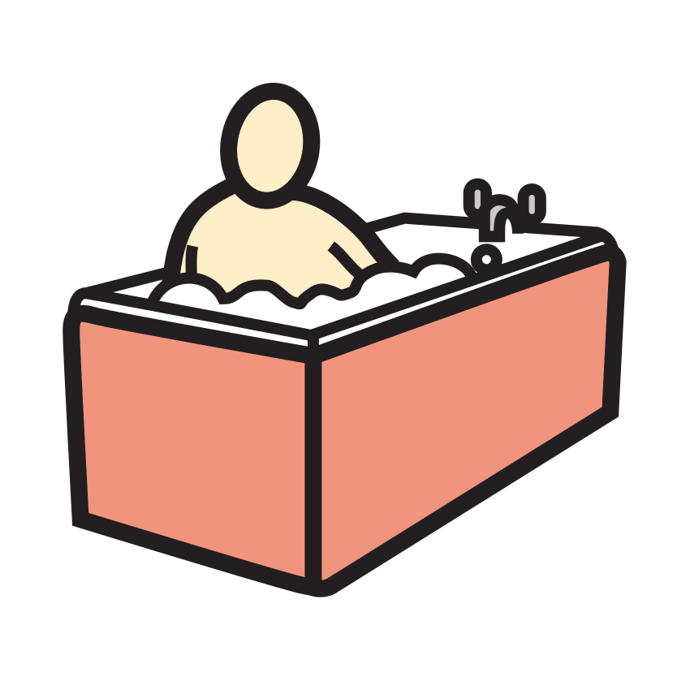
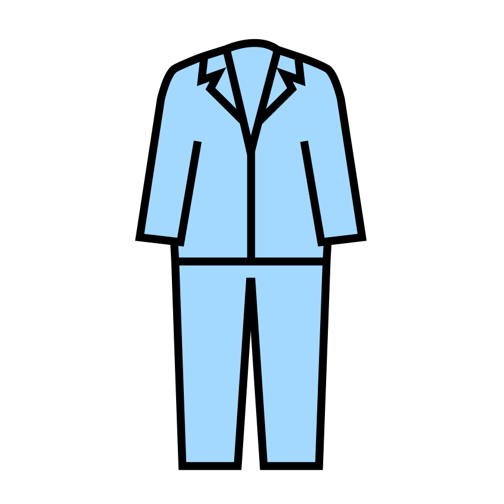
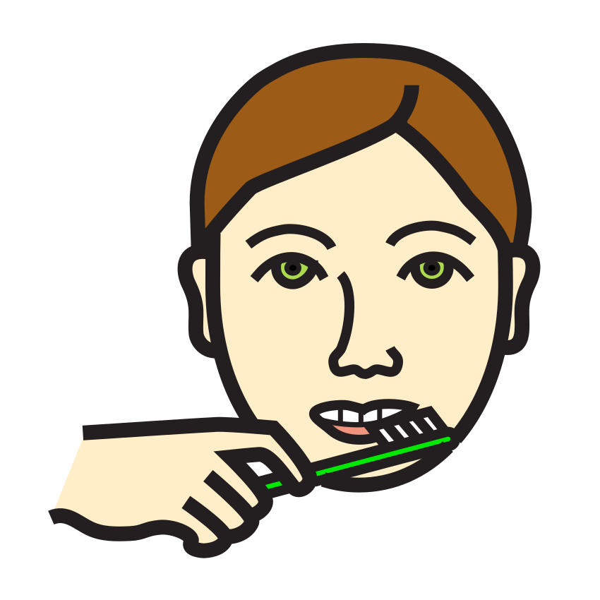
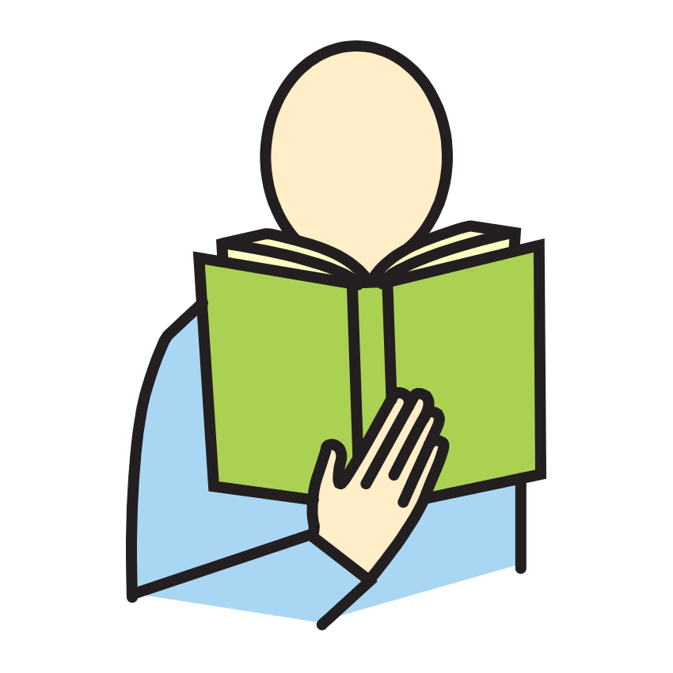
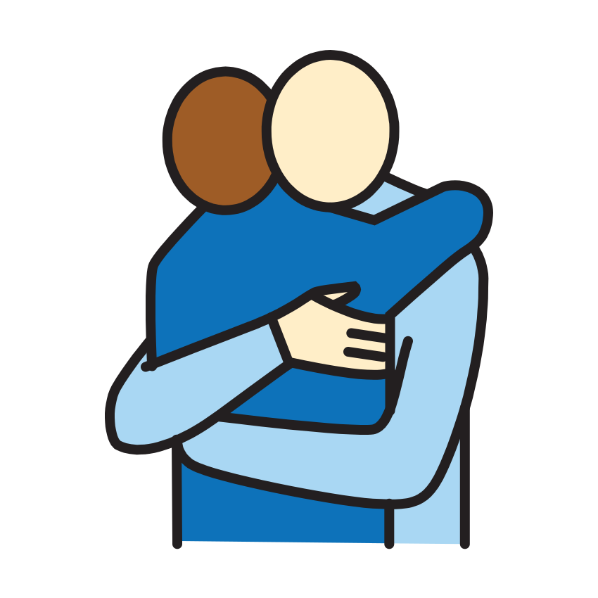
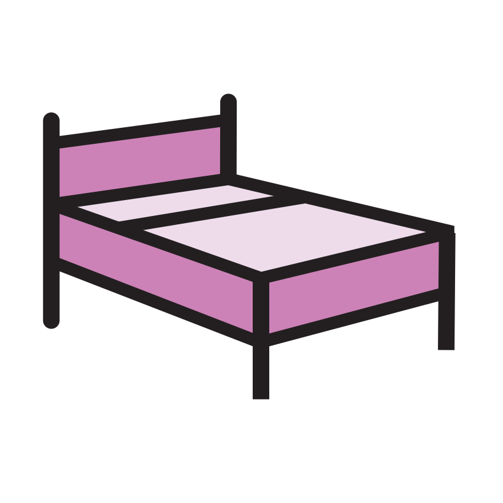

Version de test
Version de testParent Écouté,
Parent Éclairé
Par Antonio CompanyUn espace d’écoute pour tout parent en chemin, pour déposer ce qui pèse, recevoir chaque jour une dose de lumière et avancer pendant 6 mois, à votre rythme.
Gratuit pour commencer, sans carte bancaire. Rien à installer.
Ici, vous avez le droit
- de ne pas aimer certaines journées.
- de demander du répit sans vous justifier.
- d’être en colère contre la situation, sans l’être contre votre enfant.
- d’être fier ou fière de choses que personne d’autre ne remarque.
Ici, vous n’avez rien à prouver à personne.
Chaque matin, une dose de lumière
Voici celle d’aujourd’hui. Demain, une autre vous attendra.
Vous portez beaucoup de choses. Aujourd’hui, je vous propose d’en poser une seule, ne serait-ce qu’une heure. Vous pouvez reporter un rendez-vous, confier une tâche à quelqu’un ou dire non poliment. Vous verrez que tout continue de tenir.
AntonioUn endroit pour déposer ce qui pèse
Vous écrivez ce que vous avez sur le cœur, sans donner de prénom. En retour, vous recevez une question qui ouvre et une lumière.
« Ce soir, j’ai crié pour une histoire de chaussettes. Il a pleuré, et moi aussi après. Je m’en veux. »
Si une amie vivait exactement cela, que lui diriez-vous ?
Si vous ressentez de la culpabilité, c’est d’abord parce que vous tenez à votre enfant. Cela ne veut pas dire que vous avez mal fait.
Ce que vous écrivez reste sur votre appareil. Personne d’autre ne le lit.
6 mois pour comprendre, essayer et avancer
Le parcours compte 24 étapes, une par semaine. À chaque étape, un schéma vous fait comprendre une idée, Antonio vous raconte ce qu’il a vécu, vous essayez chez vous et vous écrivez quelques mots dans votre carnet de route.
- Une émotion forte monte comme une vague. Le cœur bat plus vite et la voix se durcit.
- Au sommet, la tête réfléchit mal. Ce n’est le moment ni de parler ni de décider.
- C’est le moment de faire mon geste. J’expire lentement, je sors un instant ou je marche.
- La vague redescend d’elle-même, parce que je ne l’ai pas nourrie.
- Une fois en bas, je peux parler et décider calmement.
Les 6 mois, étape par étape
1Mon point de départMois 1
- D’où je pars
- Croire en lui, l’effet Pygmalion
- Les croyances qui freinent
- Mes objectifs à moi
2Ce que je ressensMois 2
- Mes émotions, mes signaux
- La culpabilité
- Me calmer, puis lâcher prise
- Mes appuis pour tenir
3Mon regardMois 3
- Ce qui met un enfant en difficulté, le MDH-PPH
- Voir mon enfant avant ses difficultés
- Une vision de l’avenir qui donne envie
- Le bilan de mi-parcours
4Mon enfant et ses forcesMois 4
- Ses talents, ses compétences
- Encourager juste
- Des solutions pour le quotidien
- Sa place parmi les autres
5Autour de nousMois 5
- À deux, ou seul
- Les frères et sœurs
- Ma place dans mon entourage
- Collaborer avec les professionnels
6La suiteMois 6
- Tenir dans la durée
- Préparer l’avenir, pas à pas
- Le bilan du parcours
- Le chemin parcouru
Je l’ai vécu moi-même. À 10 ans, d’après les professionnels qui m’avaient rencontré, je ne parlais qu’avec 150 mots. J’étais très médiocre à l’école. Je ne comprenais pas, je n’y arrivais pas, et je pensais ne pas être au niveau.
Puis mes parents d’accueil ont cru en moi. Ils m’ont dit que j’étais intelligent. Ils m’ont appris la discipline, avec 5 minutes de lecture et 10 minutes d’instrument par jour. Je jouais de la flûte et de l’accordéon. À chaque réussite, on me félicitait.
Une boîte à outils pour les jours difficiles
Vous y trouvez 22 situations du quotidien avec des pistes à essayer, 104 images pour montrer à votre enfant ce qui vient d’abord et ce qui vient ensuite, des exercices pour souffler, et un bouton SOS.
La routine du soir, en 6 images

Bain
Pyjama
Dents
Histoire
Câlin
Dodo
Quelques-unes des 22 situations
- La crise
- Le refus
- Les transitions
- Le coucher et la nuit
- Les écrans
- Le regard des autres
- Je n’en peux plus
- Parler aux professionnels
- et 14 autres
Qui est derrière cet espace
Avant d’accompagner des familles, j’ai moi-même été accueilli dans une famille.
J’ai été placé en famille d’accueil à 10 ans, je suis travailleur social depuis mes 19 ans et je suis père de 3 enfants. Moi aussi, j’ai connu ces périodes où la santé d’un enfant prend beaucoup de place.
Avec le temps, j’ai appris à composer, à apprendre et à évoluer avec la différence, et c’est ce que j’ai voulu mettre dans cet espace.
Vous commencez gratuitement
Pendant la version de test, vous pouvez essayer chaque formule sans rien payer, et la formule « Avec Antonio » est une démonstration. Voici les prix prévus pour la Suisse.
- Découverte0 CHF
La dose chaque jour, toute la boîte à outils, 3 dépôts écoutés et la première étape du parcours.
- Le parcours14 CHF par mois
Les 24 étapes, votre carnet de route, « Mon évolution », le photolangage et des dépôts sans limite.
- Avec Antonio49 CHF par mois
Tout Le parcours, avec un mot personnel d’Antonio chaque mois et 2 questions par mois.
Vos questions
Est-ce pour moi si mon enfant n’a pas de diagnostic ?
Oui. Cet espace s’adresse à tous les parents, que votre enfant vive une situation de handicap, que votre famille traverse une période difficile, ou que vous soyez parent, simplement.
Qui lit ce que j’écris ?
Personne. Dans cette version, tout ce que vous écrivez reste sur votre appareil, et rien n’est envoyé.
Qui me répond ?
Les textes de l’espace sont écrits à l’avance, sous la responsabilité d’Antonio Company. Dans cette version de test, chaque dépôt reçoit une question et une lumière. Dans la version complète, une intelligence artificielle écrira une réponse personnelle, et l’espace vous le dira clairement.
Combien de temps cela demande-t-il ?
Comptez 5 à 10 minutes par semaine pour lire une étape, puis un essai chez vous et quelques mots dans votre carnet. Si vous vous absentez, rien ne s’accumule, et votre étape vous attend.
Est-ce que cela remplace un professionnel ?
Non. Cet espace vous soutient entre deux rendez-vous, et il ne remplace ni un médecin ni un thérapeute. En cas d’urgence, le bouton SOS vous donne les numéros à appeler.
Vous qui me lisez, je suis sûr que vous y arriverez aussi. Vous êtes de bons parents, j’en suis certain.
Cette version de test est gratuite et tout ce que vous écrivez reste sur votre appareil. La phrase-miroir personnalisée arrivera avec la version complète. En attendant, chaque dépôt reçoit une question et une lumière.